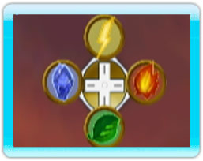

13 |
Jeter de sort |
 |

Il y a quatre sorts de base, un pour chaque élément. Vous pouvez jeter un sort en utilisant les quatre différentes directions sur la manette +: la Terre, le Feu, l'Eau et la Tempête. Si vous appuyez continuellement dans une direction puis relâchez, le sort sera beaucoup plus grand et plus lent. Regardez l'indicateur de la manette + qui apparait sur votre écran. Cela vous montrera dans quelle direction appuyer pour chaque élément puisque la direction (l’élément) sera différente pour chaque Champion.
Le but de Dragon Master Spell Caster est de combiner vos sorts de base pour que les sorts deviennent plus grands et plus puissants. Si vous combinez un sort de base avec un autre vous pouvez créer un sort de "Niveau 2". Cela peut être fait en appuyant continuellement vers le bas de la manette + pour jeter un sort plus lent puis immédiatement un sort plus petit à l'intérieur. Vous devez toujours choisir le premier élément naturel du dragon que vous êtes en train de monter et ensuite le faire suivre avec l'un des autres quatre éléments.
Par exemple: |
 |
 |
 |